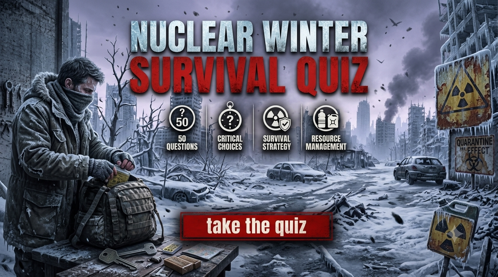

Nuclear Winter Survival Quiz
Face 50 difficult decisions in a fictional nuclear winter. Find shelter from fallout, manage food and water shortages, survive extreme cold, navigate dangerous territory and decide whom to trust. Discover your survival score and how your choices reflect compassion and ethical judgment.
Choose carefully. Your survival score and compassion-and-ethics score are calculated separately. Every decision could affect your chances of surviving the nuclear winter.
This is a fictional nuclear-winter survival experience. Your result is based on the choices you make during the quiz. The scenarios and scoring are for entertainment, not official emergency guidance.


About the Nuclear Winter Survival Quiz
The Nuclear Winter Survival Quiz is a 50-decision fictional survival challenge set after a devastating nuclear conflict. As temperatures fall and essential supplies become scarce, you must make difficult choices involving shelter, fallout, food, water, travel, other survivors and long-term survival.
The challenge goes beyond surviving the immediate aftermath. Early decisions may involve finding suitable shelter, avoiding unnecessary exposure and assessing uncertain information. Later situations introduce resource shortages, dangerous journeys, desperate groups, difficult moral choices and the challenge of rebuilding when familiar systems no longer function.
Your choices contribute to a Survival Score, while certain decisions also contribute to a separate Compassion & Ethics Score. These scores explore different aspects of decision-making: practical survival priorities, compassion, fairness, trust and responsibility under pressure.
The scenarios and scoring are fictional. This quiz is intended for entertainment and discussion of decision-making under uncertainty, not as a prediction of how someone would behave during a real emergency or a substitute for official nuclear-emergency guidance.
What This Quiz Covers
The 50 decisions cover different challenges that could arise in a fictional nuclear winter. Some situations involve immediate danger, while others focus on protecting essential supplies, interpreting uncertain information and deciding whom to trust.
Fallout, Shelter and Immediate Survival
Early scenarios explore how to respond to a nuclear attack, identify suitable shelter and reduce exposure to potential fallout. Decisions involve weighing immediate danger against the risks of moving without reliable information.
Food, Water and Essential Supplies
Food, safe water, medicine, fuel and other necessities may become difficult to obtain. These scenarios explore rationing, careful scavenging, protecting supplies and preserving enough resources for the long term.
Extreme Cold and Shelter
Falling temperatures and unreliable heating can make shelter a major survival concern. You must consider insulation, fuel supplies, injuries, exposure and the risks of remaining in or leaving a damaged building.
Radiation Hazards and Uncertainty
Some decisions involve possible contamination, unfamiliar hazards and incomplete information. The scenarios challenge you to avoid careless exposure, distinguish evidence from rumours and make cautious decisions when conditions are uncertain.
Travel, Scavenging and Relocation
Moving between locations may provide access to supplies or safer shelter, but travel can also expose you to harsh weather, dangerous routes and other people. You must weigh the possible benefits of moving against the risks of leaving a known location.
Farming and Long-Term Food Production
A prolonged disruption to sunlight, weather and supply chains can complicate food production. These situations explore adapting to shortages, protecting remaining resources and considering realistic alternatives when normal farming becomes difficult.
Raiders, Mercenaries and Other Survivors
Scarcity can create conflict over shelter, food, medicine and other resources. Some situations involve evaluating threats, cooperating with others, protecting your group and deciding when negotiation or withdrawal may be safer than confrontation.
Compassion, Ethics and Difficult Choices
Certain decisions contribute to a separate Compassion & Ethics Score. These scenarios explore fairness, responsibility, cooperation, trust and the willingness to help others while considering the practical risks of survival.
Rebuilding and Long-Term Survival
Later situations focus on preserving useful knowledge, maintaining essential resources, coordinating with other survivors and planning for a future in a damaged environment. You must consider both immediate needs and the long-term consequences of your decisions.
How the Quiz Works
The complete quiz contains 50 fictional survival decisions. Every decision presents four possible choices. Read the situation carefully and select the option you believe offers the best outcome within that scenario.
The questions may appear in a randomized order. Answer choices can also be shuffled, so the position of an option should not be treated as an indication of whether it is the best choice.
Each decision can contribute to your Survival Score. Some decisions also contain a separate compassion-and-ethics component. The two scores are calculated independently so survival-oriented choices and ethical choices can be represented separately.
A choice that improves survival does not necessarily represent the most compassionate decision. Likewise, a compassionate decision is not necessarily the safest option in every fictional situation.
Your final result includes a decision profile based on your quiz score. It describes your choices within the fictional scenarios rather than predicting your actual behaviour or guaranteeing survival in a real emergency.
Quiz Navigation
Starting the Quiz
Select START QUIZ on the opening screen to begin. Your first nuclear-winter survival decision will appear with four possible choices.
Choosing an Answer
Read the complete situation and all four choices before deciding. Consider the immediate danger, the reliability of available information and the possible consequences of your choice.
Moving Between Decisions
Use NEXT to continue through the quiz. The BACK button allows you to return to an earlier decision and reconsider your previous choice before submitting the quiz.
Completing the Quiz
Continue until all 50 decisions have been completed. When you are finished, select SUBMIT to calculate your Survival Score, Compassion & Ethics Score, decision profile and final descriptions.
Trying Again
After seeing your result, select TRY AGAIN to replay the quiz and make different decisions. You can also use SHARE MY RESULT or CHALLENGE SOMEONE to share your result with other players.
Frequently Asked Questions
How many decisions are in the quiz?
There are 50 fictional survival decisions, and every decision provides four possible choices.
What does the Survival Score measure?
The Survival Score represents how effectively your decisions address the fictional survival challenges presented throughout the quiz. A higher score indicates stronger overall survival decision-making within the scenarios.
What is the Compassion & Ethics Score?
The Compassion & Ethics Score reflects choices involving factors such as compassion, fairness, trust and responsibility. It is calculated separately from the Survival Score and represents performance within this fictional quiz, not an objective judgment of someone's character.
Can I have a high Survival Score and a lower Compassion & Ethics Score?
Yes. The two scores measure different aspects of your decisions. A choice that improves your chances of survival does not necessarily represent the most compassionate or fair decision.
Does the quiz cover nuclear fallout?
Yes. Some scenarios involve fallout concerns, shelter decisions, possible contamination and uncertainty about conditions outside. The quiz is fictional and is not a substitute for official instructions during a real nuclear emergency.
How do I decide whether to leave shelter?
The scenarios ask you to weigh the immediate situation, the information available and the risks of moving. In a real emergency, follow instructions from official emergency-management and public-safety authorities.
Does the quiz cover food and water shortages?
Yes. Several decisions involve rationing, obtaining supplies, managing limited resources and planning for a prolonged disruption.
Does the quiz include extreme cold?
Yes. Some situations explore shelter, heating, fuel, exposure and the difficulties of surviving when temperatures fall and normal services fail.
Does the quiz cover hostile survivors?
Yes. Some scenarios involve raiders, armed groups, negotiations, cooperation and decisions about protecting your group when resources are scarce.
Does the quiz provide real emergency instructions?
No. This is a fictional entertainment experience. Its scenarios and scoring are not official emergency guidance. For real emergencies, follow instructions from the appropriate emergency-management and public-safety authorities.
Can I change my answers?
Yes. You can use the BACK button to return to earlier decisions and reconsider your choices before submitting the quiz.
Can I take the quiz again?
Yes. Select TRY AGAIN after receiving your result to restart the quiz and experiment with different decisions.
Can I challenge my friends?
Yes. After completing the quiz, use CHALLENGE SOMEONE to share the challenge and compare your decision profiles with other players.